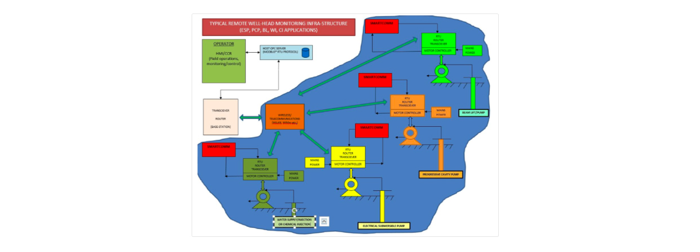
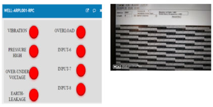
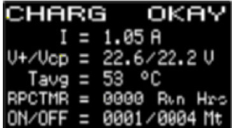

Wellguard
improve pump operation and maintenance in the artificial-lift Oil & Gas industry
WellTrak has several powerful features to improve pump operation and maintenance in the artificial-lift Oil and Gas industry. The device ensures optimal pump run-time and lowest down - times improving the efficiency.
Up to eight important TRIP signals can be hooked-up to capture data to narrow down the root cause of failure. Hence, efficient management of maintenance crew is possible and mean-time-to-repair (MTTR) is substantially reduced (lowers pump down-time).
Modbus RTU slave functionality to convey trip data captured from the motor control panel (MCP).
The “first-in” feature to pick trip-cause.
Timer-function to enable a timer well to be run in operator mode during controller or sensor failure thereby lower production loss.
Self-powered and can also power the RTU/Communication/Monitoring infrastructure for over 30 minutes (24VDC or 12VDC @30 watts) during a power outage. This helps in capturing and transmitting trip data from the MCP even if the local main power is unavailable.
It assists in trouble shooting and improves the turn around time in restarting a production well. A speedy problem rectification reduces the pump down-time. To the best of our knowledge and experience, if implemented on 500 beam lift pumps (each 50M3/D NET OIL average) could save over $1 million/month (@70USD/barrel) and also, recall that about 20-30% deferment is caused by field power outages (can be total failure, localized failure or cluster failure).
Note: Wellguard has a very wide application and can find use in windfarms, tidal farms, power plants, CNC machines etc.
Features
1. Since the failure cause is more specifically captured by WellTrak, prioritization, planning, scheduling and job notification (or request) can be made optimally by routing it to the appropriate maintenance discipline/section. This improves the mean-time-to-repair (MTTR) and thus saves the company from losses due to deferring. The cause specifics also help in conducting effective RCAs (root cause analysis) for equipment reliability and sustainability.
2. Wellguard has a non-intrusive two-wire power path (unlike 4-wire, two in and two out). Technically, it operates parallel to the existing power system and cuts-in automatically, without break during a power outage. Also, connecting or disconnecting Wellguard will not interrupt an existing powered working equipment.
3. Wellguard has in-built special function which saves deferment in Beam-lift TIMER-WELLS. Timer wells will have to be necessarily put down in the event of a pump “controller/load/position/rpm” failure to avoid damage due to continuous dry run. This feature in the device is operator selectable where the device bypasses the controller and automatically commands pump operation based on average pump ON-OFF cycles. The RUN/IDLE times are automatically calculated. The well can thus be run temporarily by an operator until the controller issue is resolved. This will improve production and also, it is safe and in no way interlinked with the pump safeguarding system.
4. Provision for up to 8 local digital (TRIP) inputs to capture trip-initiations are available and the data can be transmitted over an RS485 serial link that supports the industry standard MODBUS RTU protocol. There are LED local indications for all digital inputs.
5. Out of the 8 nos trip inputs, the “first-in” that triggered the pump-trip is available in a Modbus message.
6. Device has a 1.3” OLED display activated by PIR (movement sensor) to display all critical device parameters.
Device status and fault indications
Charge / discharge current
Main and Capacitor voltage
Temperature
RPC RUN time in hours (if timer mode activated)
Calculated average ON/OFF time in minutes (useful for TIMER WELLS)
7. Long back-up time exceeding 30 minutes @ 30Watts.
8. OPTIONAL WIFI module to transmit the digital input signals through a wireless network.
9. Both the digital inputs and serial communications are galvanically isolated for enhanced safety.
9. Can be operated from -30 to + 65 Deg C ambient temperature.
10. Low heat dissipation and quiet operation.
11. Environment friendly (ROHS compliant) energy storage and no battery disposal concerns due to absence of metals like Cadmium, Lead, Nickel or Lithium.
12. Small in size and lighter compared to solar or conventional battery based back-up systems where panels and heavy storage batteries are involved.
13. No maintenance required unlike other conventional systems (against periodic solar panel dust cleaning, storage battery replacements).
14. Gives long service life, can withstand charge-discharge cycles > 500,000 compared to just 1000 to 3000 cycles for a conventional battery based system.
15. Theft or tampering is not likely since no storage batteries are involved (storage battery theft is a well-known problem at remote well sites).
16. Both 24VDC and 12VDC versions are available. Some RPCs (Rod Pump Controller) operate on 12VDC.